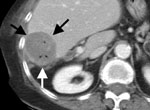
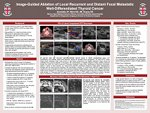

Jeffrey P. Guenette, M.D.
As of June 13, 2013:
Department of Internal Medicine
Mount Auburn Hospital
330 Mount Auburn Street
Cambridge, MA 02138
jeffrey_guenette + @brown + .edu
jpguenette.github.io
Current CV (download as PDF)
I have recently graduated from medical school at Brown University. In June 2013 I will begin an internship in Internal Medicine at Mount Auburn Hospital and in July 2014 I will begin a Radiology residency at Brigham & Women's Hospital. I will also hold a Clinical Fellow appointment at Harvard University.
Throughout medical school I have conducted clinical research with Damian Dupuy, studying outcomes of and imaging features associated with percutaneous image-guided tumor ablation. I am interested in minimizing medical treatment morbidity, medical waste, and medical costs. I am also fascinated by (though not necessary well-versed in): human and computer vision, human morphology, and human evolutionary biology.
Prior to medical school I worked in New York City at Crystal & Company for over five years as a business analyst. I graduated from Dartmouth College with a BA in ancient history and completed a postbac at Columbia University.
I am on Twitter and LinkedIn and I am married to Margarita Martinez, an actor, TV host, and singer-songwriter.
Scientific Publications

Radiofrequency ablation of colorectal hepatic metastases
Guenette JP, Dupuy DE
J Surg Oncol. 2010;102(8):978-87
Image-guided Ablation of Postsurgical Locoregional
Recurrence of Biopsy-proven Well-differentiated
Thyroid Carcinoma
Guenette JP, Monchik JM, Dupuy DE
J Vasc Interv Radiol. 2013 May;24(5):672-9
Solitary Painful Osseous Metastases: Correlation of
Imaging-Features with Pain Palliation after Radiofrequency Ablation - A Multicenter American College of Radiology
Imaging Network Study
Guenette JP, Lopez MJ, Kim E, Dupuy DE
Radiology. In Press.
Lung Ablation
Guenette JP, Dupuy DE in Mauro et. al., ed.
Image Guided Interventions 2/e
Elsevier. In Press.
Scientific Abstracts
Percutaneous Radiofrequency and Alcohol Ablation of Locally
Recurrent Well-Differentiated Thyroid Cancer
Guenette JP, Monchik JM, Dupuy DE
New England Surgical Society 92nd Annual Meeting
September 23-25, 2011, Bretton Woods, NH
CT-guided Percutaneous Radiofrequency Ablation of Painful Bone
Metastases
Guenette JP, Hanna L, Ahrar K, Lopez-Ben RR, Dupuy DE
Radiological Society of North America 97th Scientific Assembly and National Meeting
December 1, 2011, Chicago, IL
Scientific & Educational Exhibits
Image-Guided Ablation of Local Recurrent and Distant Metastatic
Well-Differentiated Thyroid Cancer
Guenette JP, Monchik JM, Dupuy DE
American Association of Endocrine Surgeons Annual Meeting
April 29-May 1, 2012, Iowa City, IA
Extracranial Tumors of the Head and Neck: Palliative and Curative
Roles for Image-Guided Ablation
Guenette JP, Monchik JM, Dupuy DE
Radiological Society of North America 98th Scientific Assembly and National Meeting
November 25-30, 2012, Chicago, IL
A Guide to Choosing the Best Thermal Ablation Modality When Treating
Soft Tissue Tumors
Guenette JP, Mayo-Smith WW, Healey TT, Iannuccilli JD, Dupuy DE
Radiological Society of North America 98th Scientific Assembly and National Meeting
November 25-30, 2012, Chicago, IL
Awarded: Certificate of Merit
Thoughtful & Provocative Links
The best statistics/public health presentation you will ever see: Hans Rosling @ TED
Why too many medical tests is a bad thing: Mammogram Math @ NY Times
Why biased research is a bad thing: Lies, Damned Lies, and Medical Science @ The Atlantic
Why to take meds only when necessary: Resistance to antibiotics now kills more people than AIDS @ TreeHugger
The MMR vaccine does NOT cause autism: The Facts In The Case of Dr. Andrew Wakefield @ TallGuyWrites
Why high-fructose corn syrup is horrible for you: Sugar: The Bitter Truth @ YouTube
Pesticides may affect your brain (in addition to the environment): Pesticides Linked to Attention Problems @ Reuters
Climate change exists and you should care: Psychology of Climate Change @ Wired
Why we should stop being so wasteful: Story of Stuff
The 2nd Amendment was for militias: How Conservatives “Reinvented” the Second Amendment @ PBS/Frontline
Awesome rumination on thinking and running: Brains Plus Brawn @ edge.com
We can manipulate atoms! A Boy And His Atom @ LA Times
Artistic Friends Doing Cool Work
Margarita Martinez (my wife), actor and singer/songwriter: www.margaritamartinez.com
Leah Bonvissuto, theater director: www.leahbonvissuto.com
Tatiana Gomberg, actor: www.tatianagomberg.com
Hannah Kasper, painter: www.hannahkasper.com
Stephen Levinson, writer: www.stephenlevinson.com
Timothy McDonough, actor: www.timothyjohnmcdonough.com
Hyunch Sung, installation artist/landscape architect: www.hyunchoosung.com
Hannah Volfson, graphic designer: www.hannahvolfson.com